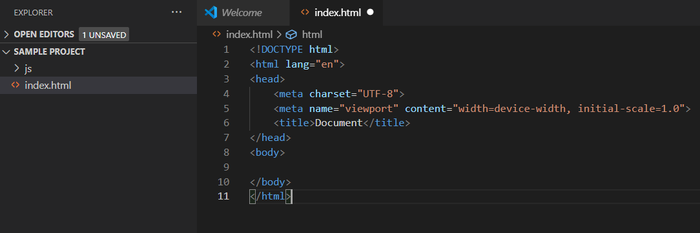

Welcome
welcome to my guide on three.js and ammo.js, This guide should give you the fundamentals and hopefully give you the tools to build upon those fundamentals and create some great projects using both these libraries.
What is three.js?
Three.js is a JavaScript library that allows for a programming interface to create and display animated 3d graphics in a web browser. You can See some examples of this library at work at this link
What is ammo.js?
Ammo.js is a JavaScript library that is a direct port of bullet physics a popular physics engine used in C and C++. it is used to simulate the physics of soft and rigid bodies to create physics worlds which are useful for creating simulations and video games.
In this tutorial, We will be using both three.js and ammo.js to create a graphical representation in a web browser of a physics world that we will create.

Getting started
Before we get started you must have your IDE installed and ready (for this tutorial we will be using visual studio code) and ammo.js and three.js installed as well. If you have not already done this, you can follow these links and come back when you are done:
Now you have followed both these tutorials and downloaded both the ide and files needed setting up your workspace is simple all you need to do is create a project folder (for this example I am creating a sample project) and inside you will want to create a subfolder called js where you will copy and paste the ammo.js and three.js files.


Next you should open visual studio code and click on the File menu option where you should open a new project, From here navigate through your file explorer and find the folder containing your project and open it.

Now that you have opened your project folder you should create a new file in your project explorer and call it index.html this will be where you write your main project code. At the top of the index file type "!" and press tab; This is a shortcut to format your HTML document.
Finally, you need to import the libraries you are going to be using, in this case, we will be using the three.js and ammo.js files we put into the js folder earlier to import these we just need to put the following code into the body tags, and then we need to create a final Script tag which will contain our javascript code. . You also need to insert the Ammo().start(init) to initialize Ammo.js and create a function called function init, Your code should now look like this:

If you have followed the steps correctly your workspace should now be ready to use.
Creating a Physics world
declaring variables and setting up graphics
Before creating the physics world we need to first create the graphics by creating a world three.js which will be what you see on the browser, To do this we define a setUpGraphics function which instantiates the three main attributes for our three.js world: "the camera, renderer, and scene". We will define all these attributes at the beginning of the script which the world will be based on so their values can be accessed globally. There are many other attribute you can add like lighting and so on but we will not be covering these in this tutorial. In this function, we will instantiate also a clock attribute which will be used later on when we begin working with ammo.js.
let camera, scene, renderer, clock; // declares four variables which will contain the main properties of the ammo.js world.
Ammo().then(init()); // This statement initialises Ammo.js and then calls the init function which starts the program.
function init(){ // This is the main function where all the main functions will be called.
}
function setUpGraphics() { // This function will define the camera, scene, renderer and clock attributes.
// Create clock for timing // and create the three.js envitoment.
clock = new THREE.Clock();
// Create the scene
scene = new THREE.Scene();
scene.background = new THREE.Color( 0xbfd1e5 );
// Create camera
camera = new THREE.PerspectiveCamera( 60, window.innerWidth / window.innerHeight, 0.2, 5000 ); // There a four paramters: 1: field of view,
// 2: creates the camera aspect ratio, 3: sets the near plane, 4: sets the far plane.
camera.position.set( 0, 30, 70 ); // This sets the camera position in reference to vector3 x,y,z axis, x = 0,
// y == 30 meaning and z = 70
camera.lookAt(new THREE.Vector3(0, 0, 0));
// Setup the renderer
renderer = new THREE.WebGLRenderer( { antialias: true } );
renderer.setClearColor( 0xbfd1e5 );
renderer.setSize( window.innerWidth, window.innerHeight );
document.body.appendChild( renderer.domElement );
renderer.shadowMap.enabled = true;
}
Creating the Physics world
Now we create the physics world using Ammo.js. This is a separate world from the three.js world which has physics properties and will be the basis for what the objects we create in the three.js world are going to be doing in each frame.
let physicsWorld; // We need to declare physicsWorld at the top of the script in the variable declaration
function createPhysics(){ // This function will create the Ammo.js physics world
let collisionConfiguration = new Ammo.btDefaultCollisionConfiguration(),
// this attribute sets the collision configuration which allows you to tune
// the algorithms used for the full collision detection.
dispatcher = new Ammo.btCollisionDispatcher(collisionConfiguration),
// The collision dispatcher filters overlapping broadphase proxies so that the collisions
//are not processed by the rest of the system.
overlappingPairCache = new Ammo.btDbvtBroadphase(),
// Broadphase compiles a list of pairs of colliding objects.
solver = new Ammo.btSequentialImpulseConstraintSolver();
// solver is what causes the objects to interact properely it takes into account gravity,
// game logic supplied forces, collisions, and hinge constraints.
physicsWorld = new Ammo.btDiscreteDynamicsWorld(dispatcher, overlappingPairCache, solver, collisionConfiguration);
physicsWorld.setGravity(new Ammo.btVector3(0, -10, 0)); // The second paramter is -10 to represent earth current gravity.
// Finally btDiscreteDynamicsWorld takes all the parameters defined above to create a physics world.
// and set gravity takes 3 parameters, the first and third can be thought of as wind and the second parameters can be thought
// of as the gravitational force, that is why in this example the second parameter is equal to -10 as this is the same as earths
gravitational force.
}
Creating the render function
The next step is creating a render frame function, This function will create a render loop which for every frame the scene and camera are updated. However, you may notice that we only use the renderer in this loop meaning that we only render the three.js world without taking into account the ammo.js world. This is because at the minute there is no need to add physics to the three.js world. After all, there are currently no objects to apply physics to. We will cover this in the creating objects part of this tutorial.
function renderFrame(){ // This is a recursive method so for every frame that passes this function is called again.
renderer.render( scene, camera ); //renderer takes the current scene and camera and renders it.
requestAnimationFrame( renderFrame ); // when a new frame occurs the function is then called again.
}
Function calls
function init (){ //This function calls all the main functions which make the world work.
setupPhysicsWorld();
setupGraphics();
renderFrame();
}
Now if you open your browser you should now see that there is a blue screen with nothing on it This means that your program is working correctly so far.

That is all for this part of the tutorial, In the next section we will cover creating objects using three.js and ammo.js and applying physics to those objects.
Physics objects
Intro
Physics objects are simple to add using three.js and ammo.js; there are several types of physics objects you can add with whatever properties you want to give them. We will be continuing this tutorial therefore We are going to be creating a block plane which our world will be based and a ball which will fall onto.
Declaring variables
rigidBodies = [], tmpTrans;
Creating the box plane
Now we are going to create a createPlane function with the following code:
function createPlane(){
let pos = {x: 0, y: 0, z: 0}; // an array storing vertor 3 positions
let scale = {x: 50, y: 2, z: 50}; // This is an array storing the x,y,z lengths.
let quat = {x: 0, y: 0, z: 0, w: 1};
let mass = 0; //The mass is set to 0 making this a static plane.
//threeJS Section
let blockPlane = new THREE.Mesh(new THREE.BoxBufferGeometry(), new THREE.MeshBasicMaterial({color: 0xa0afa4}));
blockPlane.position.set(pos.x, pos.y, pos.z);
blockPlane.scale.set(scale.x, scale.y, scale.z);
blockPlane.castShadow = true;
blockPlane.receiveShadow = true;
scene.add(blockPlane); //Adds the blockPlane mesh to the three.js scene
//Ammojs Section
let transform = new Ammo.btTransform();
transform.setIdentity();
transform.setOrigin( new Ammo.btVector3( pos.x, pos.y, pos.z ) );
// This sets the orgin of the Ammo.js to the same position as the three.js object.
transform.setRotation( new Ammo.btQuaternion( quat.x, quat.y, quat.z, quat.w ) );
let motionState = new Ammo.btDefaultMotionState( transform );
let colShape = new Ammo.btBoxShape( new Ammo.btVector3( scale.x * 0.5, scale.y * 0.5, scale.z * 0.5 ) );
colShape.setMargin( 0.05 );
let localInertia = new Ammo.btVector3( 0, 0, 0 );
colShape.calculateLocalInertia( mass, localInertia );
let rbInfo = new Ammo.btRigidBodyConstructionInfo( mass, motionState, colShape, localInertia );
// This creates the the ammo.js rigid body for the object taking the variables declared above as parameters.
let body = new Ammo.btRigidBody( rbInfo ); //This sets the body to be
physicsWorld.addRigidBody( body ); // adds the block Plane to the scene physics world.
}
This code has two sections, a three.js section where we mesh a box object, Add its material and color inside and we then set the position as well. The second part of this code is the ammo.js code, In this code, we create a box object with the same properties as the ammo.js box, and add some additional ammo.js properties like the mass in this case since we are creating a plane we want to set the mass to 0 which will create the ammo.js object static. We then add this body to the ammo.js world.
Creating the sphere
Now we are going to create the sphere object using the following code:
function createBall(){
let pos = {x: 0, y: 20, z: 0}; // sets the position of the sphere in an array
// This time we set the y axis to 20 to make sure that it is above the plane.
let radius = 2;
let quat = {x: 0, y: 0, z: 0, w: 1};
let mass = 1; // The mass for this object is 1 therefore it is dynamic and is effected by physics.
//threeJS Section
let ball = new THREE.Mesh(new THREE.SphereBufferGeometry(radius), new THREE.MeshBasicMaterial({color: 0xff0505}));
ball.position.set(pos.x, pos.y, pos.z);
ball.castShadow = true;
ball.receiveShadow = true;
scene.add(ball);
//Ammojs Section
let transform = new Ammo.btTransform();
transform.setIdentity();
transform.setOrigin( new Ammo.btVector3( pos.x, pos.y, pos.z ) );
transform.setRotation( new Ammo.btQuaternion( quat.x, quat.y, quat.z, quat.w ) );
let motionState = new Ammo.btDefaultMotionState( transform );
let colShape = new Ammo.btSphereShape( radius ); // instantiates a variable containing the
// sphere shape for our object with a radius of 2.
colShape.setMargin( 0.05 );
let localInertia = new Ammo.btVector3( 0, 0, 0 );
colShape.calculateLocalInertia( mass, localInertia );
let rbInfo = new Ammo.btRigidBodyConstructionInfo( mass, motionState, colShape, localInertia );
// Creates a constructor variable for the shape containing the information for the speher object we
// are going to add to our world.
let body = new Ammo.btRigidBody( rbInfo ); // This creates a rigid body with the properties of the btRbInfo.
physicsWorld.addRigidBody( body );
ball.userData.physicsBody = body;
rigidBodies.push(ball); // We add this rigid body to the rigid body array so
// we can iterate through a game loop later and update the physics for the objects
// in the world.
}
Similar to the plane we created we are going to have two sections, A three.js section where we create the sphere which will be displayed in the browser in and we are going to also create the ammo.js sphere with the same properties again however this time we are going to set the mass of the object to 1 so that the body is dynamic and affected by physics. Finally, We push it into the rigid bodies array so we can update the corresponding three.js objects in the updatePhysics function we will add after this.
Updating the physics
function updatePhysics( deltaTime ){
// Step world
physicsWorld.stepSimulation( deltaTime, 10 );
// Update rigid bodies
for ( let i = 0; i < rigidBodies.length; i++ ) { // iterates and updates graphical positions of each item in the Rigid body array.
let objThree = rigidBodies[ i ];
let objAmmo = objThree.userData.physicsBody;
let ms = objAmmo.getMotionState();
if ( ms ) {
ms.getWorldTransform( tmpTrans );
let p = tmpTrans.getOrigin();
let q = tmpTrans.getRotation();
objThree.position.set( p.x(), p.y(), p.z() );
objThree.quaternion.set( q.x(), q.y(), q.z(), q.w() );
}
}
}
Updating the render frame function
function renderFrame(){ // This is a recursive method so for every frame that passes this function is called again.
let deltaTime = clock.getDelta();
updatePhysics( deltaTime ); //This calls the update physics method passing delta time as a parameter.
renderer.render( scene, camera ); //renderer takes the current scene and camera and renders it.
requestAnimationFrame( renderFrame ); // when a new frame occurs the function is then called again.
}
Calling all the functions
The last thing we need to do is pass the createPlane, and createSphere function calls into the init function.
function init(){
setupPhysicsWorld();
setupGraphics();
createPlane();
createBall();
renderFrame();
}
final thoughts
Finally, If everything went right you should now see in your browser the static plane and a ball fall onto it and that is the tutorial pretty much done, If you enjoyed
it and would like to do more in three.js and ammo.js in the next part I left some good tutorials and concepts of ammo.js you should learn

Thanks for reading my tutorial
You are probably wondering where you should go from here. Luckily for you there is alot more cool stuff to learn in both ammo.js and three.js Some Ammo.js concepts you should learn after this is:
- Collision filtering and detection
- Constraints(joints)
- Moving object using three.js and ammo.js
Here are also some good tutorails and documentation which are helpful:
- Introduction to concepts like hinges, collision filtering and moving objects
- Three.js documentation>
- Ammo.js lab containing multiple examples of different ammo.js and thre.js examples.>

Thanks for reading my tutorial, If you have any issues or suggestions for this page please send an email to: ryanmckee47@outlook.com